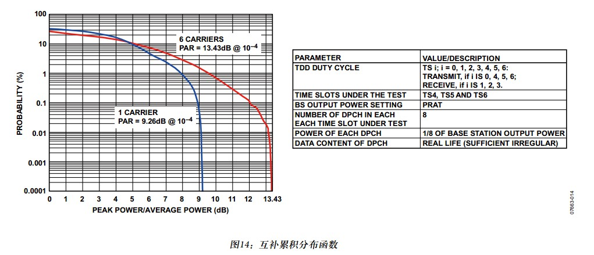

无线信号从时域上观测是幅度不断变化的正弦波，幅度并不恒定，一个周期内的信号幅度峰值和其他周期内的幅度峰值是不一样的，因此每个周期的平均功率和峰值功率是不一样的。在一个较长的时间内，峰值功率是以某种概率出现的最大瞬态功率，通常概率取为0.01%。在这个概率下的峰值功率跟系统总的平均功率的比就是峰均比。在概率为0.01%处的PAR，一般称为峰值因子（CF CREST Factor，CF）。
PAPR=E{max(y^2)/E(y^2)};
其中y为多载波叠加在一起的波形信号，假设载波数较多，可将其看做高斯信号，根据高斯分布函数，可以导出PAPR与载波数的关系。
峰均比是度量空中接口信号的包络起伏程度的一个值。一般而言，未调制载波包络本身无起伏，所以“包络的最大值”与“包络的平均值”处处相等，峰均比为1的对数，值肯定为零。另外，所有恒包络调制，峰均比都为零。WCDMA与TDSCDMA为QPSK调制，如不加滤波，他们是恒包络调制，峰均比自然为零，但因为加了均方根升余弦滤波，包络不恒定了，峰均比自然就不为零了。
描述：比较好的对PAR的描述是CCDF。
PAR：峰值功率与均值功率的比。
crest factor：(波峰因素)：波形之峰值除以有效值。
PAR针对功率而言。比如在频谱仪里面测量的显示结果
crest factor针对波形（电压）。比如在基带信号处理里面用的CFR (crest factor reduction)
采用PAR还是crest factor，取决于表示或测量的方便而以。
OFDM中，N载波的峰均比最大值是单载波的N倍。
在扩频通信中，如CDMA，WCDMA，TD-SCDMA都存在峰均比，由于调制信号的不同如QPSK、QAM等，其峰均比也有差异，CDMA信号单载波在所有通道都开满的的情况下为13dB，WCDMA信号单载波为10.26dB,TD-SCDMA为12dB。理论上每增加一个载波峰均比提高一倍（加上10log2=3dB），即CDMA信号两载波为16dB, WCDMA信号两载波为13.26dB,TD-SCDMA两载波为15 dB 。但是实际上我们知道在多载波的情况下出现峰值会非常小，因此我们用AGLENT的信号源E4432，E4436，E4437，EEE38，观看CCDF，多载波情况下的峰均比都会比理论值小。由于峰均比和统计的定义相关因此不同型号，不同公司的仪表也略有不同。
- TD是时分复用系统，每个时隙可能传送数据也可能不传，业务在不同时隙上的不均匀分布，可能导致TD系统的峰均比较高，而W系统则上下行分开，并且每时每刻都处于传送状态，因此峰均比较低。
- 要克服高的峰均比，目前采用的方法主要是动态信道分配的方法，让业务较为均匀地分布到不同的频率，时隙上去，以平衡发射和不发射状态，达到较为合理的峰均比。
TD-SCDMA技术规范定义了一个频谱一致性试验用测试模式，参见下图。如要确定波形PAR，可利用互补累积分布函数（CCDF）显示范围内的峰值功率发生概率。通常可接受的概率水平为10^-4，小于此概率的峰值功率对放大器的实际交调性的影响不大。
通常是使放大器进入饱和或者在数字处理过程中削波。对于单载波配置，利用下图可知0.01%概率下的功率峰均比大约为9.26dB。对于多载波配置，如果不注意PAR，最终PAR结果可能会很高。下图中利用测试模型分别针对6个等功率相邻载波在不同扰码条件下绘制出了模拟CCDF曲线。合理选择加扰码，可最大程度减少复合峰均比，下图给出的复合PAR为13.43dB。

峰均比对基站功放设计的意义很大，因为对峰均比要求不同，对载波数要求不同将直接影响功放成本效率和设计难度。国内外很多大公司如西门子、爱立信、华为、中兴都在为提高功放效率，成本，降低设计难度作了很多工作。
对于驱动天线的功率放大器，效率和线性度是两个相互矛盾的性能指标。放大器工作在饱和区的效率最高，不过线性度也是最差。另一方面，工作在线性区的放大器效率也是最低的。我们需要在线性度和效率之间找到平衡。
峰均比（PAR）越低，同等效率下可获得的平均功率就越高。峰均功率比抑制技术（PAPR）可降低峰值功率，同时不会造成带外失真。降低PAPR的典型方法是削波后滤波，但是会严重影响调制精度（EVM），生成新的频谱信号。
例如他们进行基站设计的时候，在基带信号进行Cliping（削峰），目的是提高功放效率，降低成本。在Cliping（削峰）的同时会影响EVM适量调制误差，因此各公司在满足3GPP中EVM适量调制误差12%的要求基础上进行Cliping（削峰）处理。随着技术水平的不断发展各公司都在Cliping（削峰）有很大的发展。综观世界各基站厂家，均能实现Cliping（削峰）后峰均比为7dB以下，载波数也不断提高。对于基站的下游设备商也就不用将峰均比设计太高，以最差来算，峰均比实现8dB就已经够用，当然根据公司要求不同可以提出特殊要求，只是在可实现性和成本效率上进行取舍。
在WCDMA功放系统指标中往往会对峰均比和Cliping及几载波同时提出要求，目的是更好地在设计中满足客户要求。